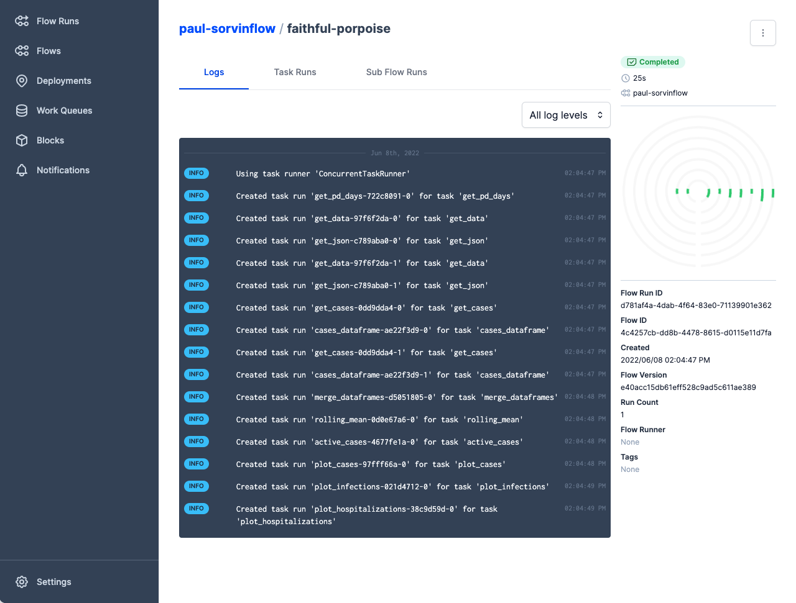

Logging¶
Prefect enables you to log a variety of useful information about your flow and task runs, capturing information about your workflows for purposes such as monitoring, troubleshooting, and auditing.
Prefect captures logs for your flow and task runs by default, even if you have not started a Prefect Orion API server with prefect orion start.
You can view and filter logs in the Prefect UI or Prefect Cloud, or access log records via the API.
Prefect enables fine-grained customization of log levels for flows and tasks, including configuration for default levels and log message formatting.
Logging overview¶
Whenever you run a flow, Prefect automatically logs events for flow runs and task runs, along with any custom log handlers you have configured. No configuration is needed to enable Prefect logging.
For example, say you created a simple flow in a file flow.py. If you create a local flow run with python flow.py, you'll see an example of the log messages created automatically by Prefect:
$ python flow.py
16:45:44.534 | INFO | prefect.engine - Created flow run 'gray-dingo' for flow
'hello-flow'
16:45:44.534 | INFO | Flow run 'gray-dingo' - Using task runner 'SequentialTaskRunner'
16:45:44.598 | INFO | Flow run 'gray-dingo' - Created task run 'hello-task-54135dc1-0'
for task 'hello-task'
Hello world!
16:45:44.650 | INFO | Task run 'hello-task-54135dc1-0' - Finished in state
Completed(None)
16:45:44.672 | INFO | Flow run 'gray-dingo' - Finished in state
Completed('All states completed.')
You can see logs for the flow run in the Prefect UI by navigating to the Flow Runs page and selecting a specific flow run to inspect.

These log messages reflect the logging configuration for log levels and message formatters. You may customize the log levels captured and the default message format through configuration, and you can capture custom logging events by explicitly emitting log messages during flow and task runs.
Prefect supports the standard Python logging levels CRITICAL, ERROR, WARNING, INFO, and DEBUG. By default, Prefect displays INFO-level and above events. You can configure the root logging level as well as specific logging levels for flow and task runs.
Logging Configuration¶
By default, Prefect displays INFO-level and above logging records. You may change this level to DEBUG and DEBUG-level logs created by Prefect will be shown as well. You may need to change the log level used by loggers from other libraries to see their log records.
You can override any logging configuration by setting an environment variable using the syntax PREFECT_LOGGING_[PATH]_[TO]_[KEY], with [PATH]_[TO]_[KEY] corresponding to the nested address of any setting.
For example, to change the default logging levels for Prefect to DEBUG, you can set the environment variable PREFECT_LOGGING_LEVEL="DEBUG".
You may also configure the "root" Python logger. The root logger receives logs from all loggers unless they explicitly opt out by disabling propagation. By default, the root logger is configured to output WARNING level logs to the console. As with other logging settings, you can override this from the environment or in the logging configuration file. For example, you can change the level with the variable PREFECT_LOGGING_ROOT_LEVEL.
You may adjust the log level used by specific handlers. For example, you could set PREFECT_LOGGING_HANDLERS_ORION_LEVEL=ERROR to have only ERROR logs reported to Orion. The console handlers will still default to level INFO.
There is a logging.yml file packaged with Prefect that defines the default logging configuration.
You can customize logging configuration by creating your own version of logging.yml with custom settings, by either creating the file at the default location (/.prefect/logging.yml) or by specifying the path to the file with PREFECT_LOGGING_SETTINGS_PATH. (If the file does not exist at the specified location, Prefect ignores the setting and uses the default configuration.)
See the Python Logging configuration documentation for more information about the configuration options and syntax used by logging.yml.
Prefect Loggers¶
To access the Prefect logger, import from prefect import get_run_logger. You can send messages to the logger in both flows and tasks.
Logging in flows¶
To log from a flow, retrieve a logger instance with get_run_logger(), then call the standard Python logging methods.
from prefect import flow, get_run_logger
@flow(name="log-example-flow")
def logger_flow():
logger = get_run_logger()
logger.info("INFO level log message.")
Prefect automatically uses the flow run logger based on the flow context. If you run the above code, Prefect captures the following as a log event.
15:35:17.304 | INFO | Flow run 'mottled-marten' - INFO level log message.
The default flow run log formatter uses the flow run name for log messages.
Note
Starting in 2.7.11, if you use a logger that sends logs to the API outside of a flow or task run, a warning will be displayed instead of an error. You can silence this warning by setting PREFECT_LOGGING_ORION_WHEN_MISSING_FLOW=ignore or have the logger raise an error by setting the value to error.
Logging in tasks¶
Logging in tasks works much as logging in flows: retrieve a logger instance with get_run_logger(), then call the standard Python logging methods.
from prefect import flow, task, get_run_logger
@task(name="log-example-task")
def logger_task():
logger = get_run_logger()
logger.info("INFO level log message from a task.")
@flow(name="log-example-flow")
def logger_flow():
logger_task()
Prefect automatically uses the task run logger based on the task context. The default task run log formatter uses the task run name for log messages.
15:33:47.179 | INFO | Task run 'logger_task-80a1ffd1-0' - INFO level log message from a task.
The underlying log model for task runs captures the task name, task run ID, and parent flow run ID, which are persisted to the database for reporting and may also be used in custom message formatting.
Logging print statements¶
Prefect provides the log_prints option to enable the logging of print statements at the task or flow level. When log_prints=True for a given task or flow, the Python builtin print will be patched to redirect to the Prefect logger for the scope of that task or flow.
By default, tasks and subflows will inherit the log_prints setting from their parent flow, unless opted out with their own explicit log_prints setting.
from prefect import task, flow
@task
def my_task():
print("we're logging print statements from a task")
@flow(log_prints=True)
def my_flow():
print("we're logging print statements from a flow")
my_task()
Will output:
15:52:11.244 | INFO | prefect.engine - Created flow run 'emerald-gharial' for flow 'my-flow'
15:52:11.812 | INFO | Flow run 'emerald-gharial' - we're logging print statements from a flow
15:52:11.926 | INFO | Flow run 'emerald-gharial' - Created task run 'my_task-20c6ece6-0' for task 'my_task'
15:52:11.927 | INFO | Flow run 'emerald-gharial' - Executing 'my_task-20c6ece6-0' immediately...
15:52:12.217 | INFO | Task run 'my_task-20c6ece6-0' - we're logging print statements from a task
from prefect import task, flow
@task
def my_task(log_prints=False):
print("not logging print statements in this task")
@flow(log_prints=True)
def my_flow():
print("we're logging print statements from a flow")
my_task()
Using log_prints=False at the task level will output:
15:52:11.244 | INFO | prefect.engine - Created flow run 'emerald-gharial' for flow 'my-flow'
15:52:11.812 | INFO | Flow run 'emerald-gharial' - we're logging print statements from a flow
15:52:11.926 | INFO | Flow run 'emerald-gharial' - Created task run 'my_task-20c6ece6-0' for task 'my_task'
15:52:11.927 | INFO | Flow run 'emerald-gharial' - Executing 'my_task-20c6ece6-0' immediately...
not logging print statements in this task
You can also configure this behavior globally for all Prefect flows, tasks, and subflows.
prefect config set PREFECT_LOGGING_LOG_PRINTS=True
Formatters¶
Prefect log formatters specify the format of log messages. You can see details of message formatting for different loggers in logging.yml. For example, the default formatting for task run log records is:
"%(asctime)s.%(msecs)03d | %(levelname)-7s | Task run %(task_run_name)r - %(message)s"
The variables available to interpolate in log messages varies by logger. In addition to the run context, message string, and any keyword arguments, flow and task run loggers have access to additional variables.
The flow run logger has the following:
flow_run_nameflow_run_idflow_name
The task run logger has the following:
task_run_idflow_run_idtask_run_nametask_nameflow_run_nameflow_name
You can specify custom formatting by setting an environment variable or by modifying the formatter in a logging.yml file as described earlier. For example, to change the formatting for the flow runs formatter:
PREFECT_LOGGING_FORMATTERS_FLOW_RUNS_FORMAT="%(asctime)s.%(msecs)03d | %(levelname)-7s | %(flow_run_id)s - %(message)s"
The resulting messages, using the flow run ID instead of name, would look like this:
10:40:01.211 | INFO | e43a5a80-417a-41c4-a39e-2ef7421ee1fc - Created task run
'othertask-1c085beb-3' for task 'othertask'
Styles¶
By default, Prefect highlights specific keywords in the console logs with a variety of colors.
Highlighting can be toggled on/off with the PREFECT_LOGGING_COLORS setting, e.g.
PREFECT_LOGGING_COLORS=False
You can change what gets highlighted and also adjust the colors by updating the styles in a logging.yml file. Below lists the specific keys built-in to the PrefectConsoleHighlighter.
URLs:
log.web_urllog.local_url
Log levels:
log.info_levellog.warning_levellog.error_levellog.critical_level
State types:
log.pending_statelog.running_statelog.scheduled_statelog.completed_statelog.cancelled_statelog.failed_statelog.crashed_state
Flow (run) names:
log.flow_run_namelog.flow_name
Task (run) names:
log.task_run_namelog.task_name
You can also build your own handler with a custom highlighter. For example, to additionally highlight emails:
- Copy and paste the following into
my_package_or_module.py(rename as needed) in the same directory as the flow run script, or ideally part of a Python package so it's available insite-packagesto be accessed anywhere within your environment.
import logging
from typing import Dict, Union
from rich.highlighter import Highlighter
from prefect.logging.handlers import PrefectConsoleHandler
from prefect.logging.highlighters import PrefectConsoleHighlighter
class CustomConsoleHighlighter(PrefectConsoleHighlighter):
base_style = "log."
highlights = PrefectConsoleHighlighter.highlights + [
# ?P<email> is naming this expression as `email`
r"(?P<email>[\w-]+@([\w-]+\.)+[\w-]+)",
]
class CustomConsoleHandler(PrefectConsoleHandler):
def __init__(
self,
highlighter: Highlighter = CustomConsoleHighlighter,
styles: Dict[str, str] = None,
level: Union[int, str] = logging.NOTSET,
):
super().__init__(highlighter=highlighter, styles=styles, level=level)
-
Update
/.prefect/logging.ymlto usemy_package_or_module.CustomConsoleHandlerand additionally reference the base_style and named expression:log.email.console_flow_runs: level: 0 class: my_package_or_module.CustomConsoleHandler formatter: flow_runs styles: log.email: magenta # other styles can be appended here, e.g. # log.completed_state: green -
Then on your next flow run, text that looks like an email will be highlighted--e.g.
my@email.comis colored in magenta here.from prefect import flow, get_run_logger @flow def log_email_flow(): logger = get_run_logger() logger.info("my@email.com") log_email_flow()
Applying markup in logs¶
To use Rich's markup in Prefect logs, first configure PREFECT_LOGGING_MARKUP.
PREFECT_LOGGING_MARKUP=True
Then, the following will highlight "fancy" in red.
from prefect import flow, get_run_logger
@flow
def my_flow():
logger = get_run_logger()
logger.info("This is [bold red]fancy[/]")
log_email_flow()
Inaccurate logs could result
Although this can be convenient, the downside is, if enabled, strings that contain square brackets may be inaccurately interpreted and lead to incomplete output, e.g. DROP TABLE [dbo].[SomeTable];" outputs DROP TABLE .[SomeTable];.
Log database schema¶
Logged events are also persisted to the Orion database. A log record includes the following data:
| Column | Description |
|---|---|
| id | Primary key ID of the log record. |
| created | Timestamp specifying when the record was created. |
| updated | Timestamp specifying when the record was updated. |
| name | String specifying the name of the logger. |
| level | Integer representation of the logging level. |
| flow_run_id | ID of the flow run associated with the log record. If the log record is for a task run, this is the parent flow of the task. |
| task_run_id | ID of the task run associated with the log record. Null if logging a flow run event. |
| message | Log message. |
| timestamp | The client-side timestamp of this logged statement. |
For more information, see Log schema in the API documentation.